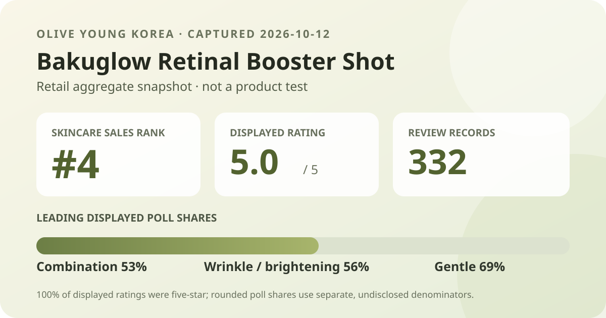
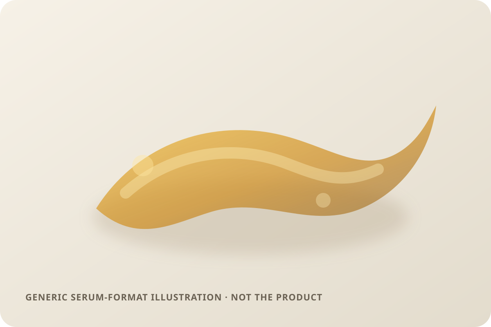

Aggregate data captured October 12, 2026. This article uses only Olive Young Korea's displayed rating, review count, star distribution, and anonymous shopper-poll shares. No individual review, reviewer name, or user photo is reproduced or translated. I did not test the product.

The short version: Ongredients Bakuglow Retinal Booster Shot ranked fourth in the captured Olive Young Korea skincare sales list and displayed 5.0 out of 5 from 332 review records. The detail panel showed a 100% five-star distribution, while the largest poll responses were combination skin 53%, wrinkle/brightening concern 56%, and gentle 69%. That is a favorable but still limited retail snapshot—not evidence that the product changes wrinkles, pigmentation, texture, or tolerance for every person.
The captured review panel displayed an average of 5.0 across 332 review records. Its detailed breakdown assigned 100% to five stars and 0% to each lower band. That is unusually concentrated, but the correct reading is narrow: all ratings were placed in the highest rounded band at the time of capture. The panel does not show whether the exact unrounded average was 4.95, 4.99, or another value that rounds to 5.0.
A perfect displayed distribution is not the same as perfect performance. Retail reviews are voluntary, the source does not independently verify every buyer, and the article cannot establish whether the visible records represent typical purchasers. The result is useful for describing current sentiment, not for calculating a treatment probability or safety rate.
The skin-type poll showed combination 53%, dry 37%, and oily 11%. These shares sum to 101% because the retailer displays whole-number rounding. Combination is therefore the largest visible response group, but this does not prove the formula works best for combination skin. It also does not tell us how many of the 332 rating records answered that separate poll.
The concern poll showed wrinkle/brightening 56%, hydration 33%, and soothing 11%. The labels describe what respondents selected in the retailer's survey interface. They are not wrinkle measurements, pigment readings, hydration-instrument results, or clinician assessments. The product title's “0.2%” wording is preserved as part of the listing name only; I did not independently verify the ingredient concentration, what the percentage refers to, or how the formula compares with similarly named products.
The irritation panel showed gentle 69%, ordinary 29%, and felt irritation 2%. This is the most directly relevant tolerance signal available on the page, but it remains a rounded, self-reported poll without a visible denominator. A 69% gentle response does not guarantee a gentle experience, and the 2% response cannot be converted into a population adverse-event rate.

A 5.0 average can be encouraging while still carrying substantial uncertainty. The product was marked “NEW” in the captured listing, and 332 records form a meaningful retail signal but not a mature one compared with products carrying thousands or tens of thousands of reviews. Early purchasers can differ from later mainstream buyers, promotions can change who submits feedback, and a few lower scores have a larger effect on a smaller base.
The most defensible takeaway is not “everyone loves it.” It is that, on the capture date, the retailer displayed an entirely five-star rounded distribution and mostly gentle or ordinary irritation responses. Those two panels answer different questions and may use different respondent bases. They should not be merged into a single success percentage.
No. This is a distinct listing from the previously covered Ongredients Bakuglow Capsule Lotion. The names share a line word, but one listing is a lotion and this one is a booster-shot serum-format product. Separate goods records, titles, review bases, and poll results mean their data should not be combined.
The captured Korea price was ₩25,000, reduced from ₩32,000, but price and promotion details can change quickly. Regional formulas, package sizes, sellers, taxes, and return terms may also differ. A dated Korean listing price is therefore only a context point, not a current international quote or a value verdict.
It is Olive Young Korea's displayed one-decimal average across 332 linked records on the capture date. The detailed panel placed 100% in the five-star band, but both figures are rounded retail aggregates.
Combination skin was the largest displayed skin-type response at 53%. That describes representation in the poll, not a comparative performance result.
The displayed irritation poll was 69% gentle, 29% ordinary, and 2% felt irritation. Because the denominator was not shown and responses are self-selected, the panel cannot guarantee personal tolerance.
No independent concentration analysis was performed. “0.2%” appears in the retailer title, and this article does not infer what exactly was measured, whether the figure is equivalent across products, or what result it would produce.
No. I did not use the product. The format illustration is intentionally generic, and this article does not invent directions, amount, frequency, color, absorption, or finish.
Ongredients Bakuglow Retinal Booster Shot was the highest-ranked valid unpublished candidate in the captured skincare sales list. The product page was readable, the names matched, and both main review surfaces agreed on 5.0 stars from 332 records. Its perfect rounded star distribution is notable, while the smaller review base, undisclosed poll denominators, and self-selected retail context keep the conclusion modest. Use the snapshot to frame questions—not as proof of efficacy, safety, or personal fit.
Source: Olive Young Korea product listing. Aggregate data captured 2026-10-12. No individual review text, reviewer identity, product photo, or user photo is reproduced or translated.
See all products ranked by captured review volume · Browse captured skin-type poll representation · Read the methodology